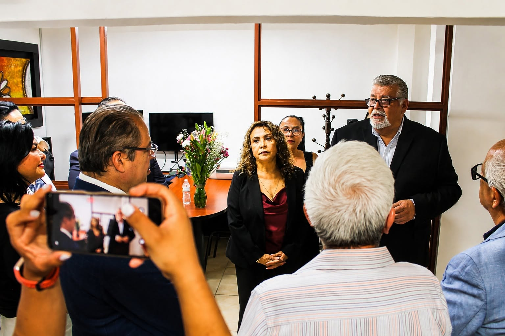

MOVIMIENTO 45 Y MÁS A.C.
Centro Privado de Mediación y Conciliación • IJA 065 y 353
Centro Privado de Mediación y Conciliación • IJA 065 y 353
Resolvemos conflictos civiles, familiares y preventivos de arrendamiento sin juicios largos ni desgastantes. Nuestros convenios finales sancionados por el Instituto de Justicia Alternativa tienen fuerza de cosa juzgada.
Acreditaciones Oficiales 065 y 353 ante el Instituto de Justicia Alternativa del Estado de Jalisco.
Convenios con plena validez legal sancionados ante el Instituto de Justicia Alternativa del Estado de Jalisco (IJA).
Protege tu patrimonio inmobiliario mediante convenios preventivos de arrendamiento y comodato con ejecución directa.
Privilegiamos el diálogo y el interés superior de la niñez para alcanzar acuerdos duraderos en el entorno familiar.
Evita litigios prolongados resolviendo adeudos, incumplimientos y controversias particulares mediante mecanismos alternos.
Dale Play a nuestras cápsulas aquí mismo o síguenos en nuestras plataformas oficiales con El Abogato Mediador y nuestro equipo de especialistas.
Consejos prácticos sobre contratos de arrendamiento, comodato, pensiones alimenticias y cómo evitar juicios largos mediante la mediación.
Ver videos en TikTokAnálisis legales, eventos con el Instituto de Justicia Alternativa (IJA), jornadas comunitarias y orientación jurídica gratuita.
Visitar Página de FacebookGuías visuales sobre requisitos de convenios finales, prevención de conflictos inmobiliarios y actividades de nuestro Centro Privado.
Seguir en InstagramSesiones de trabajo, firma de convenios y acreditaciones oficiales de nuestro Centro Privado en el Estado de Jalisco.


Impulsamos la profesionalización jurídica y la formación de Personas Facilitadoras con aval académico e institucional, en coordinación con el Colegio de Abogados Movimiento 45 y Más del Estado de Jalisco A.C.